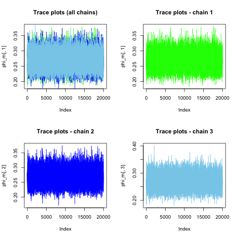
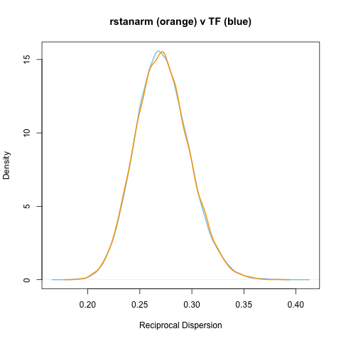
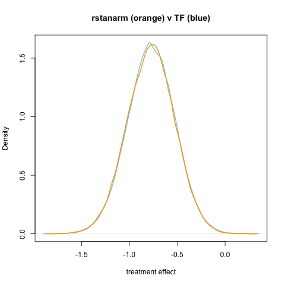

neg_bin_tfp_stan
neg_bin_tfp_stan.Rmd
### Prepare model inputs
set.seed(9999)
library(rstanarm)
data(roaches)
roaches_cp<-roaches # will make manual edits
roaches_cp$roach1<-roaches_cp$roach1/100;# manual
roaches_cp$exposure2<-log(roaches_cp$exposure2) # exposure is logged
py$data<-r_to_py(roaches_cp)import tensorflow as tf
import tensorflow_probability as tfp
from tensorflow_probability import distributions as tfd
tfb = tfp.bijectors
import numpy as np
import pandas as pd
import time
rows, columns = data.shape
y_data=tf.convert_to_tensor(data.iloc[:,0], dtype = tf.float32)
X=tf.convert_to_tensor(data.iloc[:,1:],dtype=tf.float32)
X=tf.concat([tf.ones([rows,1],dtype=tf.float32), X], axis=1)
beta_expos=tf.convert_to_tensor(1.0,dtype=tf.float32) # dummy
def make_observed_dist(phi, beta_senior,beta_treatment, beta_roach,alpha):
"""Function to create the observed Normal distribution."""
B=tf.stack([alpha,beta_roach,beta_treatment,beta_senior,beta_expos])
#print(B._shape_as_list())
logmu=tf.linalg.matvec(X,B)
phi_expanded = tf.expand_dims(phi, -1) # (3, 1)
mu = tf.math.exp(logmu)
#r = tf$expand_dims(1.0, -1L)/ phi_expanded; # total_count = 5
#probs <- r / (r + mu)
prob = phi_expanded/(phi_expanded+mu)
#prob<-(phi_expanded)/(mu+phi_expanded)
# Create distribution for observations
return(tfd.Independent(
#tfd_normal(loc = mu, scale = sigma_expanded),
#mu = exp(mu)
#phi <- 0.2 # scale/overdispersion
#r = tf$expand_dims(1.0, -1L)/ sigma_expanded; # total_count = 5
#probs <- r / (r + mu)
tfd.NegativeBinomial(total_count = phi_expanded, probs = 1-prob),
reinterpreted_batch_ndims = 1
))
## -------- this needs contructed via cat
# Define the joint distribution without matrix mult
model = tfd.JointDistributionSequentialAutoBatched([
tfd.Normal(loc=0., scale=5., name="alpha"), # # Intercept (alpha)
tfd.Normal(loc=0., scale=2.5, name="beta_roach"), # # Slope (beta_roach1)
tfd.Normal(loc=0., scale=2.5, name="beta_treatment"), # # Intercept (alpha)
tfd.Normal(loc=0., scale=2.5, name="beta_senior"), # # Slope (beta_roach1)
tfd.Exponential(rate=1., name="phi"),
make_observed_dist
])
tf.random.set_seed(99990)
def log_prob_fn(alpha, beta_roach,beta_treatment,beta_senior,phi):
"""Unnormalized target density as a function of states."""
return model.log_prob((
alpha, beta_roach,beta_treatment,beta_senior,phi, y_data))
def neg_log_prob_fn(pars):
alpha=pars[[0]]
beta_roach=pars[[1]]
beta_treatment=pars[[2]]
beta_senior=pars[[3]]
phi=pars[[4]]
"""Unnormalized target density as a function of states."""
return -model.log_prob((
alpha, beta_roach,beta_treatment,beta_senior,phi, y_data))
#### get starting values by find MLE
if(True):
start = tf.constant([0.1,0.1,0.1,0.1,0.1],dtype = tf.float32) # Starting point for the search.
optim_results = tfp.optimizer.nelder_mead_minimize(neg_log_prob_fn,
initial_vertex=start, func_tolerance=1e-04,max_iterations=1000)
#print(optim_results.initial_objective_values)
#print(optim_results.objective_value)
#print(optim_results.position)
# bijector to map contrained parameters to real
unconstraining_bijectors = [
tfb.Identity(),
tfb.Identity(),
tfb.Identity(),
tfb.Identity(),
tfb.Exp()
]
num_results=20000
num_burnin_steps=10000
sampler = tfp.mcmc.TransformedTransitionKernel(
tfp.mcmc.NoUTurnSampler(
target_log_prob_fn=log_prob_fn,
step_size=tf.cast(0.5, tf.float32)), #tf.cast(0.1, tf.float32)),
bijector=unconstraining_bijectors
)
adaptive_sampler = tfp.mcmc.DualAveragingStepSizeAdaptation(
inner_kernel=sampler,
num_adaptation_steps=int(0.8 * num_burnin_steps),
target_accept_prob=tf.cast(0.8, tf.float32))
istate = optim_results.position
n_chains=3
current_state = [tf.expand_dims(tf.repeat(istate[0],repeats=n_chains,axis=-1),axis=-1),
tf.expand_dims(tf.repeat(istate[1],repeats=n_chains,axis=-1),axis=-1),
tf.expand_dims(tf.repeat(istate[2],repeats=n_chains,axis=-1),axis=-1),
tf.expand_dims(tf.repeat(istate[3],repeats=n_chains,axis=-1),axis=-1),
tf.expand_dims(tf.repeat(istate[4],repeats=n_chains,axis=-1),axis=-1)
]
# Speed up sampling by tracing with `tf.function`.
@tf.function(autograph=False, jit_compile=True,reduce_retracing=True)
def do_sampling():
return tfp.mcmc.sample_chain(
kernel=adaptive_sampler,
current_state=current_state,
num_results=num_results,
num_burnin_steps=num_burnin_steps,
seed= tf.constant([9199, 9999], dtype=tf.int32),
trace_fn=None)#lambda current_state, kernel_results: kernel_results)
t0 = time.time()
#samples, kernel_results = do_sampling()
samples = do_sampling()
t1 = time.time()
print("Inference ran in {:.2f}s.".format(t1-t0))
samples = list(map(lambda x: tf.squeeze(x).numpy(), samples))
print(samples)
samples<-py$samples
## Trace plots for the reciprocal dispersion parameter
png("precomputed/vg2_plot1.png")
phi_m<-samples[[5]] # the fifth parameter in the model, a matrix
par(mfrow=c(2,2))
plot(phi_m[,1],type="l",col="green",main="Trace plots (all chains)")
lines(phi_m[,2],col="blue")
lines(phi_m[,3],col="skyblue")
plot(phi_m[,1],type="l",col="green",main="Trace plots - chain 1")
plot(phi_m[,2],type="l",col="blue",main="Trace plots - chain 2")
plot(phi_m[,3],type="l",col="skyblue",main="Trace plots - chain 3")
dev.off()
# reloading data as stan does the log(exposure) internally
data(roaches)
roaches$roach1<-roaches$roach1/100;# manual
stan_glm1 <- stan_glm(y ~ roach1 + treatment + senior, offset = log(exposure2),
data = roaches, family = neg_binomial_2,
prior = normal(0, 2.5),
prior_intercept = normal(0, 5),
seed = 12345,
warmup = 10000, # Number of warmup iterations per chain
iter = 20000, # Total iterations per chain (warmup + sampling)
thin = 1,
chains = 2) # Thinning rate)
res_m<-as.matrix(stan_glm1)
png("precomputed/vg2_plot2.png")
par(mfrow=c(1,1))
plot(density(c(phi_m)),col="skyblue",lwd=2, main="rstanarm (orange) v TF (blue)",
xlab="Reciprocal Dispersion") # all chains combined
lines(density(res_m[,"reciprocal_dispersion"]),col="orange",lwd=2)
dev.off()
phi_m<-samples[[3]] # the third parameter in the model, a matrix
png("precomputed/vg2_plot3.png")
plot(density(c(phi_m)),col="skyblue",lwd=2, main="rstanarm (orange) v TF (blue)",
xlab="treatment effect") # all chains combined
lines(density(res_m[,"treatment"]),col="orange",lwd=2)
dev.off()
